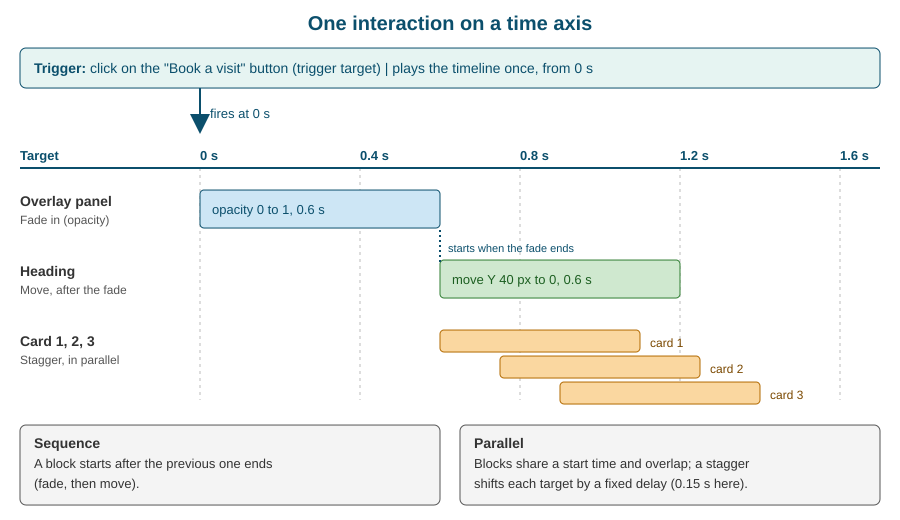

Interactions with GSAP
|
This content was generated with the assistance of AI and should be verified against the official documentation before being relied on in production. |
This page was checked against the Webflow Help Center, the Webflow updates feed and the GSAP site on 2026-10-28. Webflow is a hosted service without version numbers, so a panel label or a setting can change between two visits, and the dates given below are the dates of the corresponding Webflow announcements. Interactions with GSAP is offered on every Webflow plan, from the free Starter Site plan to Enterprise, and nothing on this page depends on a paid tier. Adding custom GSAP code with your own script tags needs a plan that allows custom code (a Site plan or a Workspace plan that includes custom code); building interactions in the Interactions panel does not. The GSAP code example uses GSAP 3.13 or later, the first release after GSAP became free.
Motion is the part of a site that visitors feel before they can describe it. A menu that slides in, a heading whose words rise one after another, a card that tilts toward the cursor: each is an interaction, a change of the page that is started by something the visitor or the browser does. Webflow lets a designer build these changes visually, on a timeline, without writing JavaScript. Since 2025 the engine underneath is GSAP, the GreenSock Animation Platform, which Webflow acquired and then made free.
This page explains the system from the ground up: where GSAP comes from and what its licence allows, the vocabulary of triggers, targets, actions and animations, how the timeline orders them, every trigger and action the Interactions panel offers, how to reuse and scope interactions, how to make them respect breakpoints and reduced motion, how Webflow avoids a flash of unstyled content, what the published page actually contains, and a method for designing an animation that does not turn into a tangle. The running example is the Fernbrook Gardens site, a fictitious botanical garden with a home page, an events collection and a ticket page.

Where GSAP comes from
GSAP is a JavaScript animation library created by GreenSock. It does one job very well: it changes a numeric property of something (a CSS property, an SVG attribute, a variable) from one value to another over time, with an easing curve, and it lets many such changes be arranged on a timeline. Browsers have two native tools for this, CSS transitions and CSS animations, and a third, the Web Animations API. GSAP predates the last one, works around many cross-browser differences, and adds the things that are hard to do natively: sequencing many animations with exact relative timing, staggering a group of elements, scrubbing an animation to the scroll position, splitting text into words and letters, and animating along an SVG path.
The library has a core and a set of plugins. The ones that matter for Webflow users are named in the panel itself or are visible in its results:
-
ScrollTrigger, which ties an animation to the position of elements in the viewport (start and end points, scrubbing, pinning).
-
SplitText, which wraps lines, words or characters of a text element in separate elements so each can be animated.
-
Stagger support in the core, which offsets the start of the same animation across several targets.
The free licence
For years, GSAP’s core was free for most uses and its "Club" plugins (SplitText, ScrollSmoother, MorphSVG and others) required a paid membership. Webflow acquired GreenSock in the autumn of 2024. On 2025-04-30 Webflow announced that all of GSAP, including the former Club plugins, is free for everyone, and that the standard licence now also covers commercial use. GSAP 3.13, released with that announcement, shipped a rewritten SplitText that is about half the size of the old one. The announcement was made together with the launch of Webflow Cloud, and the GSAP team stated that the library keeps being maintained by the same people who made it.
The free licence is the GSAP "Standard" licence, and it has one restriction that is easy to read past. Using GSAP on websites and apps, including commercial ones, is a permitted use and needs nothing from you. What the licence prohibits is building GSAP into a tool that lets other people create animations visually, without writing code, when that tool helps create a competitor to Webflow’s own animation builder; doing so needs Webflow’s written consent. The licence also forbids reverse engineering the library to build competing products and removing its proprietary notices. The licence FAQ states that GSAP code written by an AI assistant is not a prohibited use, and that developers of niche visual tools can ask Webflow whether their case competes. For the people who read this page, designers and developers building sites, the restriction never applies. It matters only to a vendor shipping a no-code animation editor.
Three practical consequences follow from the change:
-
A Fernbrook developer can use any GSAP plugin in custom code without a licence purchase, on a Webflow site or elsewhere.
-
The old advice to use
gsap-trial, the time-limited trial build of the Club plugins, is obsolete. That package is deprecated, and the standardgsappackage contains the plugins. -
A tutorial that tells a reader to buy a membership to use SplitText or ScrollTrigger describes the world before April 2025.
Source: GSAP Standard License
Two ways to use GSAP in Webflow
Webflow offers GSAP in two forms, and they are different products that share an engine.
| Interactions with GSAP | GSAP library in custom code | |
|---|---|---|
What it is |
A visual panel with triggers, targets, actions and a timeline |
The GSAP JavaScript library, loaded on the site, which you call yourself |
Who it is for |
Designers and marketers; no JavaScript |
Developers who need something the panel cannot express |
Where it lives |
The Interactions panel in the Designer |
The GSAP integration in site settings, plus a script in Custom code or a Code Embed |
Scope |
Stored in the Webflow project and published with it |
Stored as text in your own code |
Strength |
Visual timing, reuse, component scoping, collaboration |
Full control: custom plugins, state machines, data-driven animation |
The library form is a site setting. In the Settings panel of the site there is a GSAP integration section that loads the GSAP core and plugins from Webflow’s own CDN, so a script tag pointing at a third-party host is not needed. Custom animation code then goes in Page settings > Custom code > Before </body> tag, or in a script inside an Embed element; this is covered in more depth on Custom Code: Head, Footer and Embeds and Third-party Libraries and Scripts. The two can coexist on one site. Interactions you build in the panel are not written in your code, and your code does not appear in the panel.
Two interaction systems: GSAP and Classic
Webflow has had visual interactions since 2012. That first engine, widely called IX2, is now labelled Classic Interactions, and Webflow launched a replacement, Interactions with GSAP, in 2025. The announcement said it would roll out to everyone by the end of July 2025, at no extra cost and on every plan. The older version was not removed: the Interactions panel has a version dropdown at the bottom, and a site that already contains Classic interactions keeps working. A new site, and any site without Classic interactions, defaults to GSAP. If an article describes an option you cannot see, the first thing to check is that dropdown.
The two systems do not share a data model, and an interaction is not converted from one to the other. The official comparison lists, among other differences:
| Aspect | Interactions with GSAP | Classic Interactions |
|---|---|---|
Model |
Trigger, target, action |
Page or element trigger that leads to an animation |
Timeline |
Horizontal timeline with blocks and tracks |
Steps list without a timeline |
Built-in GSAP features |
SplitText, staggers, ScrollTrigger, advanced easing editor |
Not available |
Prefers-reduced-motion setting |
Yes |
No |
Breakpoint settings |
Yes, since 2025-09-30 |
Not part of the comparison list |
Real-time collaboration |
Yes |
No |
Animating variable values |
Added later, on 2026-03-26 |
Yes, and listed as Classic-only when the comparison was written |
Rive support |
Added later, on 2026-04-17 |
Listed as Classic-only when the comparison was written |
Shared libraries and page branching |
Listed as Classic-only when the comparison was written; component-scoped interactions were added afterwards |
Yes |
Advanced targeting |
Yes |
No |
Webflow’s recommendation is to use GSAP for most new work and to keep Classic where a site depends on something only Classic offers. The Classic Interactions page describes the older system, what still requires it, and how to switch, and Scroll and Page Animations builds the scroll recipes on this page’s foundations. Because both runtimes exist, a site that mixes them ships the code for both, which is one reason to finish a migration rather than leave a site half converted.
The vocabulary: triggers, targets, actions and animations
An interaction in the GSAP system is described with four words. Each of them is a different question, and mixing them up is the commonest source of confusion for beginners.
-
A trigger is the event that starts the interaction: a click, a hover, the page loading, the page being scrolled, the mouse moving, a custom event. It answers "when does this run?"
-
A trigger target is the element on which the event is detected: the button that is clicked, the card that is hovered, the section whose position drives the scroll. It answers "what does the visitor touch?"
-
An action is a step that runs after the trigger fires. Actions are instantaneous or interpolated over time. It answers "what happens?"
-
An action target is the element, or group of elements, an action changes. It answers "what moves?"
The trigger target and the action target are independent. A click on a button (trigger target) can open a panel somewhere else on the page (action target), and one action can have several targets at once. This is the essential improvement over the Classic model, where the element that starts an animation and the elements it changes were tied together more tightly. In the Interactions panel, the target of a trigger and the target of an action are chosen separately, using the element on the canvas, a class, or a relationship to the trigger element such as its children, siblings or parent. The December 2025 update improved exactly this relative targeting.
The word animation is used for an action that changes a value over time, for example "fade in" or "move up". A preset is an animation with settings already filled in. An instantaneous action, called Set, is not an animation, but it sits on the same timeline.
The timeline
The timeline is what distinguishes Interactions with GSAP in the Designer. It is a horizontal ruler of seconds, and every action appears on it as a block. Blocks are grouped into tracks, which organise them by element or by purpose, so that all the blocks that change the hero heading sit together. A block has a start position, a duration, an easing curve and the property or properties it changes. Dragging a block moves its start; dragging an edge changes its duration.
The model comes straight from GSAP: a GSAP timeline is a container that holds tweens and places each of them at a position in time. Webflow’s glossary states that the positions in its timeline are all absolute, meaning a block’s start is stored as a number of seconds from the start of the timeline, and not only as "after the previous block". The GSAP documentation describes the three ways a position can be written in code: an absolute time in seconds, a label, or a relative pointer such as the start or end of the previous animation. The panel shows the result of such decisions as block positions. A person who is used to code can read a block’s start time as the second argument of a GSAP tl.to() call.
Sequence and parallel
Two actions on one timeline can run one after the other, which is a sequence, or at the same time, which is parallel. Webflow’s overview says that actions run on a timeline and that you can configure them to run in sequence or in parallel. There is no separate switch; the choice is expressed by where the blocks start.
-
In a sequence, the second block starts when the first block ends. Fernbrook’s event card fades in over 0.6 seconds and then its heading slides up over 0.6 seconds.
-
In parallel, blocks share a start time or overlap. The card fades in while its heading is already moving, which feels lighter and quicker.
-
With a stagger, the same action is applied to several targets, and each target starts a fixed delay after the previous one. The three Fernbrook price cards rise 0.15 seconds apart, so the group appears to ripple in.
The figure at the top of this page shows all three on one axis. Two guidelines come from experience: put overlapping blocks on different properties of different elements, because two blocks that change the same property of the same element at overlapping times fight over it; and prefer overlap to strict sequences for anything a visitor has to wait for, because a long strict sequence makes a page feel slow even when each step is short.
One-shot timelines and continuous triggers
Triggers differ in how they use the timeline. A click, a hover, a page load or a custom event is a one-shot trigger: the event plays the timeline, and a second event can play it again, reverse it or toggle it. Scroll and Mouse move are continuous triggers: the visitor’s position (how far a section has travelled through the viewport, where the cursor is inside an element) is mapped onto the timeline, so that the timeline is not "played" but "scrubbed". The help article on creating and managing interactions notes that continuous triggers organise their actions differently from the single shared timeline of the one-shot triggers, which is why the Interactions panel shows the settings of each trigger separately.
Triggers
Triggers are chosen in the Interactions panel after selecting an element and choosing New interaction. The panel offers the following, and each one has its own settings.
| Trigger | When it fires | Typical Fernbrook use |
|---|---|---|
Click |
The visitor clicks or taps the trigger target; can play, reverse, toggle or restart |
A button that opens a ticket-options drawer |
Hover |
The pointer enters and leaves the trigger target, with separate actions for each |
A garden card whose image zooms slightly |
Page load |
The page has loaded; can run once or every time |
The home hero heading rising in |
Scroll |
The trigger target travels through the viewport; start and end points, scrub and pin settings |
The events section revealing its cards |
Mouse move |
The pointer position over the trigger element or over the whole viewport drives the timeline |
A map illustration that shifts with the cursor |
Custom event |
A named event dispatched by Webflow or your own code |
A gift-shop banner that animates when a cart event fires |
Click and hover
A click interaction is the one beginners meet first. The settings decide what the second click does: the timeline can toggle between a forward and a reverse run, or restart. A hover interaction has two halves, hover in and hover out, and each half can have its own timeline or share one that is reversed. On touch screens there is no hover; a design that needs a hover effect to reveal information needs an equivalent that works on tap, or the information is hidden from every phone visitor. The method for designing the motion of a hover is revisited below.
Page load
A page-load interaction runs when the page has loaded. It is where entrance sequences live. Because a page-load interaction starts after the browser has already painted the elements in their final state, an animation that begins from a hidden position needs the flash handling described in the section on FOUC.
Scroll
The Scroll trigger exposes the features of GSAP’s ScrollTrigger plugin through controls: where the animation starts and ends relative to the viewport (for example, when the top of the element reaches 80 percent of the viewport height), whether the animation is scrubbed so that it follows the scrollbar, whether the element is pinned while the animation runs, and whether the animation plays once, plays whenever the element enters, or toggles. The full treatment, with the Fernbrook parallax and sticky header recipes, is on Scroll and Page Animations.
Mouse move
The Mouse move trigger launched on 2026-07-20. It tracks the cursor relative to the trigger element or to the whole viewport and converts the position into two values between 0 and 1, one for the horizontal axis and one for the vertical axis, which scrub a timeline. It offers configurable smoothing, so that the animation follows the cursor with a trailing ease instead of snapping to it, and a resting position, which says where the animation sits when the cursor leaves the area. Before this update, a pointer-driven effect needed custom code, and forum posts from 2025 that say mouse-position triggers are missing describe the situation before the update.
Custom event
A custom event trigger starts an interaction when an event with a given name is dispatched. Your own script can dispatch such an event, which is how an interaction is connected to application logic. For example, a script that finishes loading the Fernbrook ticket calendar can dispatch an event named fernbrook:calendar-ready, and an interaction listening for it reveals the calendar. The trigger gives a no-code designer a clean boundary with a developer: the designer builds the motion, the developer fires the event. Event names should be namespaced, as in the example, so that two scripts do not accidentally use the same name.
Actions
An action is one step on the timeline. Some actions are instantaneous; others interpolate values over time. The panel groups them as follows.
| Action | What it does | Notes |
|---|---|---|
Move |
Changes the position of the target along X, Y and Z (a CSS transform translate) |
Does not push neighbouring elements; the layout space is unchanged |
Scale |
Changes the size with a CSS transform scale, uniformly or per axis |
Scaling is visual; it does not change the measured width and height |
Rotate |
Rotates the target around an origin point |
The transform origin matters; set it deliberately |
Opacity |
Changes transparency from 0 to 1 |
A fully transparent element is still clickable unless hidden as well |
Colour |
Animates a colour property such as text, background or border colour |
Colour variables can be animated too, since March 2026 |
Split text |
Breaks a text element into lines, words or characters so each part can be targeted |
Offers a mask option; text must be visible to be split correctly |
Stagger |
Starts the same action on a set of targets with a delay between them |
Total time or fixed delay; order forward, backward, from the centre or random |
Lottie |
Plays, pauses or scrubs a Lottie animation on the timeline |
Added on 2025-12-12 |
Rive |
Set Rive and Animate Rive: control a Rive file’s artboards, numbers, text, colours, booleans and enums |
Added on 2026-04-17 |
Set |
An instant change with no tween: toggle a class, show or hide, set a value |
Added on 2025-12-12 |
Mouse Follow |
Makes elements other than the trigger follow the cursor |
Per-element stagger and chained smoothing |
Interval |
Fires when the cursor has travelled a distance or at a speed |
Default distance 100 pixels; velocity can be turned on |
Every interpolated action has a duration, an easing curve and a start position. The easing editor lets you pick a named curve or draw one, and the choice often matters more than the duration: an ease-out (fast start, slow end) feels natural for things that arrive, and an ease-in for things that leave.
Move, scale, rotate, opacity and colour
These are the basic transform and style actions. Move, scale and rotate are applied through CSS transforms, which a browser can composite on the graphics processor without recalculating the layout. That is why they are cheap, and why animating width, height, top or margin is not: those properties force the browser to lay out the page on every frame. When a design appears to need a size change, a scale usually delivers it at a fraction of the cost. Opacity is also cheap. Colour is repainted, which is slightly more expensive but still modest.
An action changes the target relative to its normal state. The panel lets you define both a starting state and a final state, and the method section below shows why this is the cleanest way to think about it.
Split text and stagger
Split text turns one text element into many animatable parts. The result is a headline whose lines, words or letters can be animated individually, and combined with a stagger it produces the familiar effect of text assembling itself. The mask option wraps each part in its own clipping container, so that a part rising from below its line is invisible until it crosses the line. SplitText has consequences for accessibility and layout that are easy to miss:
-
Splitting text can change how a screen reader announces it, because the words or letters become separate elements. GSAP’s SplitText adds an accessible label to the original element by default, but test the page with a screen reader rather than assuming this.
-
A parent with
overflow: hiddenclips the split parts when they move outside their line. If the animation looks cut off, check the overflow of the element and its ancestors. -
Split text changes the DOM, so a heading that is re-split after a font loads or after a viewport resize can shift. Web fonts that load late make the line breaks change; set the font before the animation relies on lines.
A stagger can be defined by the total time from the first target to the last, or by a fixed delay between neighbours. The first scales well when a collection list has a variable number of items, because the whole group always takes the same time; the second keeps the rhythm constant. The order can run forward, backward, from the centre outward or randomly.
Lottie, Rive and Set
The Lottie and Set actions were introduced together on 2025-12-12. A Lottie action controls a Lottie animation placed on the page (see Lottie, Spline, Rive and Video): it plays, pauses or scrubs it, so a Lottie file can be tied to a scroll position or to a click. Set is the instantaneous action: toggling a class, showing or hiding an element, or setting a value, without a transition. It is how an interaction switches a state, for instance adding an "is-open" class to the navigation, instead of interpolating a property.
The Rive actions arrived on 2026-04-17. Rive is an interactive vector format with state machines, and Webflow exposes two actions: Set Rive, which assigns data model values (artboards, numbers, text, colours, booleans and enums) and Animate Rive, which animates them over time. A state-machine transition can be triggered from a timeline.
Mouse Follow and Interval
Mouse Follow makes elements other than the trigger element follow the cursor. Each follower can have its own stagger, and followers can be chained so that each one follows the previous with smoothing, which produces a trail. It is the basis of magnetic buttons and custom cursors. Interval is a different idea: instead of tracking the position, it fires an action each time the cursor has travelled a given distance, with a default of 100 pixels, or, with velocity turned on, in response to how fast the cursor is moving. A Fernbrook "falling petals" effect on the home hero uses an Interval to drop one petal for every 100 pixels of cursor travel.
Cursor effects are decoration. They do not exist on touch devices and should never carry information. Webflow University has lessons on cursor-following interactions that cover Mouse X and Y actions, follow settings and a cursor-following 3D button.
Animating variables
Since 2026-03-26 an interaction can animate variables, so that the binding of a variable to a preset action works with custom animations, Set, Lottie and Spline, and one interaction can animate several variables. The effect is that a theme can change smoothly: the Fernbrook evening pages switch the colour variables of the Night mode through an animation, and every element that uses them follows. Variables are explained in Variables and Modes.
Presets and the Interactions manager
A preset is an action saved with its settings so that it can be applied again. To make one, build an action, then use the Save as preset bookmark icon next to the action’s name. The saved preset is listed in the Interactions manager, the panel on the left side of the Designer where all the interactions and presets of a site are listed and searched. Webflow provides a set of starter presets as well. The advantage of presets is consistency: every fade-up on the site is the same fade-up, with the same duration and easing, and changing the preset’s definition is a single decision.
The launch of Interactions with GSAP also made reuse a central idea: an interaction can be defined once and applied to several elements or classes, instead of being rebuilt for each. A design system keeps a short list of motion presets, named by intent (Reveal up, Soft hover, Card ripple), and the people who build pages choose from the list. This is the motion counterpart of the colour and spacing variables described in Building a Design System.
Two other controls help manage a crowded panel. An action can be hidden: a hidden action stays on the timeline and remains editable, but does not run, which is the right tool for testing a page without one of its effects. And an interaction has a name, which should say what it does and where, such as "Home hero entrance", because a site with sixty interactions called "Interaction 12" is unmaintainable.
Scoping interactions
Breakpoints
An interaction can behave differently at different breakpoints. Before 2025-09-30, an interaction applied to every screen size alike, and a community wishlist item asked for per-device control. The update "More control over Interactions with GSAP" added breakpoint support, a prefers-reduced-motion setting and page scoping, and rolled them out to all users at no charge. In practice, a desktop interaction that moves a large element 400 pixels across the screen is turned off, or replaced by a simple fade, on mobile. The Responsive Design page explains the breakpoint cascade on which this builds: see Responsive Design and Breakpoints. The setting decides the screen sizes on which the interaction exists at all, so an interaction that is off at a breakpoint does not run there, and its initial state is not applied there either.
Page scoping
Page scoping decides on which pages an interaction is loaded. The reason is performance: an interaction that is used only on the home page does not need to ship its definition to every other page of a large site. Scoping an interaction to the pages that use it keeps the payload on the others small.
Reduced motion
Some visitors suffer from vestibular disorders, migraines or simple distraction when a page moves a lot, and they set "reduce motion" in their operating system. Browsers pass that preference to pages through the prefers-reduced-motion media feature. Interactions with GSAP has a setting for it, and Webflow’s guidance is to use conditional playback: for a visitor with the setting on, the interaction can skip straight to its final state, or not run at all. Classic Interactions has no equivalent, which is one of the reasons to migrate.
Reduced motion does not mean no motion. Large movements, parallax, scaling and anything that fills the viewport are the problem. A short opacity change is usually acceptable. For the Fernbrook home page, the hero parallax and the falling petals skip to the final state, while a card that fades in still fades. The general rules, and the relationship to WCAG 2.2 success criterion 2.3.3 (animation from interactions), are on Accessibility.
Component-scoped interactions
An interaction can belong to a component, and to the variants of that component. The glossary says that motion then travels with the component whenever it is reused across pages, across sites and through shared libraries. To create one, open the component in component edit mode, which is signalled by a green ribbon at the top of the canvas, and add the interaction from the Interactions panel; triggers and targets are scoped to the component automatically. A Fernbrook "Event card" component with a hover lift needs the lift defined once, and every instance of the card, wherever it is placed, has it. Components are covered in Components, Props, Slots and Variants and sharing in Shared Libraries.
The scoping has a consequence for the author: because the targets are inside the component, the interaction cannot animate an element outside it. An animation that must touch the page, for example opening a drawer outside the card, is built at page level, or the component exposes the part through its structure.
Avoiding the flash of initial state
An entrance animation usually starts from a state that is not the page’s normal state: the heading is transparent and 40 pixels low, and it moves to its normal place. The browser paints the page before the animation script starts, so for a moment the heading is visible in its final position, then disappears, then animates in. That flicker is a flash of unstyled content, abbreviated FOUC, here a flash of the initial state.
Webflow now prevents it automatically for Interactions with GSAP. Its help article says the platform hides elements that begin in a "from" or "from and to" state, and reveals them when the animation is ready to initialise. The mechanism is visible in the page: a small script injects a CSS rule that sets visibility: hidden !important on the affected elements, and when Webflow is ready to start the animation it adds the class w-mod-ix3 to the document’s root element, which releases them. Before this feature existed, forum posts recommended setting the element’s initial opacity in the style panel to match the animation, which a designer then had to undo.
The same article names the failure case. When one element has several animations that start from different states, the automatic hiding cannot know which to apply. The remedy is to change the animations to "to" tweens, which start from the element’s normal style, or to separate the animations onto different elements, typically a wrapper and its child. Two more habits help: do not animate an element’s display, which is not interpolable, and check the page with the network throttled, because the flash is most visible when scripts are slow.
A side effect to know about: if the script never loads, the elements stay hidden. Webflow’s runtime is part of every published page, so this is rare, but a site that blocks scripts through a consent tool or a corporate filter can show a page with missing content. Do not hide content that matters, such as a price or a legal notice, behind an entrance animation.
Collaboration
Interactions with GSAP supports real-time collaboration, which the official comparison lists as a feature that Classic Interactions lacks. Two designers can work in the same project at once, and a designer can build an interaction while a colleague styles the elements it targets. Two habits keep this safe: agree who owns an interaction, because two people editing the same timeline at the same time produce a result that neither of them intended, and name interactions clearly, so that a colleague finding "Home hero entrance" knows what it touches. Review is easier on a branch: Page Branching, Releases and Approvals shows how a page with new motion is reviewed before it is merged. Comments and the activity log are covered in Collaboration, Comments and the Activity Log.
Interactions are part of the project, so they are covered by the backups described in Backups and Recovery. Whether interactions are included in a code export is covered on Code Export and Portability; check the exported folder rather than assume, because an animation that depends on Webflow’s runtime does not necessarily run outside it.
A method: initial, final, transition
Chapter 7 of Webflow by Example teaches interactions with a three-part habit. This page restates it in its own words and adapts it to the GSAP model, because the habit survives the change of engine and a designer who has it produces fewer tangled timelines.
Step 1: decide the initial state. Before touching the panel, say what the element looks like before the animation starts. "Invisible, 40 pixels lower, and slightly smaller" is a complete description. If the initial state is the element’s normal style, the element needs no initial state and the animation is a "from" tween that ends where the design ends.
Step 2: decide the final state. The final state is almost always the normal design: opaque, in place, full size. The reason to keep the final state equal to the normal style is that the page remains correct when the animation does not run, because of reduced motion, a disabled breakpoint, a script failure or a screenshot tool. A design whose final state differs from its normal style is a design that breaks when the interaction is switched off.
Step 3: decide the transition. The transition is the path between the two: duration, easing and position on the timeline. Keep durations between roughly 0.2 and 0.8 seconds for interface motion, use an ease-out for entrances and an ease-in for exits, and stagger by 0.05 to 0.2 seconds. Longer transitions belong to deliberate storytelling, such as a scroll scene.
Step 4 (the addition for GSAP): decide the order. With the timeline, an animation has a fourth question: which block is first, which overlap, and which wait? Write it as a list before building. The Fernbrook event card is "panel fades in (0 to 0.6 s); heading moves up (starts at 0.4 s); the three price cards stagger in (starts at 0.8 s)".
The book works with Webflow’s Classic Interactions, where the steps are labelled differently, and the book’s screens do not match the Interactions panel in 2026. Its method, not its screenshots, is what carries over.
A worked example: the Fernbrook events hero
Fernbrook Gardens wants its events page to open with a short entrance, a clear call to action and respect for visitors who prefer less motion. The design, applying the method:
-
Initial and final. The heading, subheading and "Book a visit" button start at opacity 0 and 40 pixels low. They end at opacity 1 in their normal place, which is the style panel’s own value.
-
Trigger. Page load, scoped to the events page only.
-
Transition. A split text action divides the heading into words with a mask; the words move up with a stagger of 0.08 seconds and an ease-out of 0.6 seconds. The subheading and the button start at 0.4 and 0.6 seconds, overlapping the heading.
-
Cards. The three event cards use a Scroll trigger: a reveal that plays once when the top of the card reaches 85 percent of the viewport height, staggered 0.15 seconds apart.
-
Hover. A preset named Soft hover, saved from the "Event card" component, lifts the card 4 pixels and adds a shadow; it is stored in the component, so every instance has it.
-
Breakpoints. On mobile the heading moves 20 pixels instead of 40, and the cards reveal without a stagger.
-
Reduced motion. The page-load sequence skips to the final state; the card reveal reduces to a plain opacity change.
-
Check. Publish to the staging domain, throttle the network in the browser’s developer tools and reload several times to look for the flash.
The same structure, written out for the interactions of a real site, is a table that goes into the design-system documentation: interaction name, trigger, target, actions, durations, breakpoints, reduced-motion behaviour and owner.
What the published page contains
A visual interaction is stored in the Webflow project, not in your code, and the published page carries a compiled version of it. Understanding what ships helps with performance, debugging and portability. Inspect the published page with the browser’s developer tools to see the exact markup, because Webflow’s internal attribute names and script file names are implementation details that can change between releases.
-
Runtime script. Webflow’s published JavaScript includes the interactions runtime. Interactions with GSAP loads the GSAP engine and the plugins an interaction needs, so a site with many ScrollTrigger and SplitText interactions ships more script than one with a single fade. This is the reason page scoping exists.
-
Element identifiers. Elements that take part in an interaction are marked with an identifier attribute, so that the runtime can find them. Webflow has long used a
data-w-idattribute for this, and an element that is a trigger or a target in a GSAP interaction carries such an identifier in the published HTML. Do not rename or strip these attributes in custom code; the interaction stops finding its element. -
Initial-state handling. The injected
visibility: hidden !importantrule and thew-mod-ix3class on the root element described above belong to the output of Interactions with GSAP. A style sheet you write should not override that rule. -
Animated values. Look at an animated element in the developer tools while the interaction plays: transforms and opacity are applied by the runtime as inline styles, and the site’s CSS file keeps the element’s normal classes. Reload with the interaction hidden to compare.
-
Classic output. A Classic interaction produces its own data structure and its own runtime, which is why a site with both loads both.
A developer who wants to coordinate with these interactions has two supported routes. The first is the custom event trigger shown earlier. The second is to load GSAP from Webflow’s CDN and drive other elements from custom code, taking care that code and panel do not animate the same property of the same element. A minimal example that animates a Fernbrook ticket counter, and respects reduced motion, is below. It is written as a script for Page settings > Custom code > Before </body> tag of the ticket page, after enabling the GSAP integration in site settings.
<script>
window.Webflow ||= [];
window.Webflow.push(function () {
const mm = gsap.matchMedia();
mm.add(
{
motion: "(prefers-reduced-motion: no-preference)",
reduce: "(prefers-reduced-motion: reduce)"
},
(context) => {
const { reduce } = context.conditions;
const counter = { value: 0 };
const target = document.querySelector("[data-fernbrook-counter]");
if (!target) return;
gsap.to(counter, {
value: 1250,
duration: reduce ? 0 : 1.2,
ease: "power2.out",
onUpdate: () => {
target.textContent = Math.round(counter.value).toLocaleString("en-US");
}
});
}
);
});
</script>The script waits for Webflow to be ready, uses gsap.matchMedia() to detect the reduced-motion preference, and sets the duration to zero for visitors who prefer less motion, so that they see the final figure immediately. The counter is an attribute selector, which keeps the script independent of class names.
Performance
Interactions are code that runs on every visit, so their cost is part of the page’s cost. The rules are the ones that apply to animation anywhere.
-
Animate transforms and opacity: move, scale, rotate and opacity are inexpensive. Animating layout properties is not.
-
Limit the number of simultaneous targets. Staggering twelve cards is fine; staggering two hundred table cells is not.
-
Scope interactions to the pages that need them, using page scoping.
-
Do not mix Classic and GSAP interactions on one site longer than a migration needs.
-
Prefer one Lottie or Rive file of a few kilobytes to a long video for a decorative loop.
-
Watch the Largest Contentful Paint: a hero that starts invisible and animates in delays the moment the largest element appears. Animate small parts of the hero, not the hero image. The detail is on Performance Optimization and in Analyze and Optimize.
Choosing the right tool for motion
Not every movement needs the Interactions panel. A useful order of preference is to use the simplest tool that does the job, because each step up adds weight and maintenance.
| Need | Tool | Reason |
|---|---|---|
A button colour changes on hover |
A hover state in the Style panel |
It is plain CSS, works without JavaScript and costs nothing at runtime |
A card lifts and its shadow grows |
A CSS transition set on the class, as in HTML and CSS animations |
The browser does it natively and the effect survives a script failure |
An entrance sequence with several elements |
Interactions with GSAP, page load |
Ordering and overlap are what the timeline is for |
Words or letters appear one after another |
Interactions with GSAP, split text with a stagger |
Needs DOM splitting, which CSS cannot do |
An element follows scroll progress |
Interactions with GSAP, scroll trigger |
ScrollTrigger is built in |
A cursor trail or magnetic button |
Mouse move, Mouse Follow and Interval |
Available in the panel since July 2026 |
A data-driven animation, or an animation that depends on application state |
GSAP in custom code |
The panel does not read your data |
A complex illustrated scene with states |
Lottie or Rive, controlled by an action |
The artwork is authored in a dedicated tool |
The CSS-first rule is also an accessibility and resilience rule. A hover state in CSS never leaves the page hidden if a script fails, and it does not need a reduced-motion switch for a change of colour.
Building a motion system for Fernbrook
A site with a handful of interactions can be managed by memory. A site with dozens needs the same discipline as its colours and spacing. The Fernbrook design system has a short motion section.
| Preset | Duration and easing | Trigger | Use |
|---|---|---|---|
Reveal up |
0.6 s, ease-out, 40 px, opacity 0 to 1 |
Scroll or page load |
Headings, cards, images entering the page |
Soft hover |
0.2 s, ease-out, lift 4 px |
Hover |
Cards and buttons |
Card ripple |
0.15 s stagger |
Scroll |
Grids of cards or collection items |
Drawer |
0.4 s, ease-in-out |
Click |
Ticket options, filters, mobile navigation |
Fade only |
0.3 s, ease-out |
Any |
The reduced-motion fallback for every other preset |
Four rules keep the system coherent. Durations and easings come from the table, not from taste on the day. Each preset has a reduced-motion twin, so the switch for visitors who prefer less motion is a rule instead of a hundred decisions. Each interaction is named after its purpose and page. And every new preset is added to the table first, so that the next person finds it.
Testing and debugging
-
Preview in the Designer, then publish to the staging domain. The Designer preview runs the interaction in a Webflow runtime that differs slightly from the published one in its timing of script loads. A flash of the initial state can only be judged on a published page.
-
Hide, do not delete. Hide an action to find out which block causes a glitch. A hidden action stays on the timeline and remains editable.
-
Throttle the CPU and the network in the browser’s developer tools. An animation that is smooth on a developer laptop can stutter on a mid-range phone.
-
Emulate reduced motion. The developer tools of the major browsers can emulate the
prefers-reduced-motionmedia feature; reload and check that every interaction takes its fallback. -
Read the console. Errors in custom code, such as a missing
gsapobject because the integration is not enabled, appear there. -
Test with the keyboard and a screen reader. An interaction that opens a drawer on click must also open it with Enter and Space, and the focus must move into the drawer. Interactions change appearance; they do not manage focus or ARIA state unless the design does.
Accessibility beyond reduced motion
Reduced motion is the setting Webflow provides, and it is only part of the obligations. Success criterion 2.2.2 of WCAG 2.2 requires that content that moves for more than five seconds and starts automatically can be paused, stopped or hidden, which applies to an endless looping background or a carousel. Criterion 2.3.1 forbids content that flashes more than three times a second. A scroll-pinned section must not trap a keyboard user. Content must be reachable without the interaction: if a paragraph appears only on hover, a keyboard visitor and a touch visitor never see it. The Accessibility page gathers these checks for the whole site.
Security and governance
Interactions built in the panel contain no code of yours, so they add no script-injection surface. The risks come from the code around them. A custom event trigger accepts any script that can dispatch an event with the right name, so a third-party script on the page can start an interaction; that is acceptable for an animation and unacceptable if the interaction changes anything sensitive, such as revealing a hidden form. Custom GSAP code and third-party tags run with full access to the page, so they follow the rules of Third-party Libraries and Scripts: load from a source you trust, pin versions, and review who can edit the custom-code fields. In an Enterprise workspace the roles and permissions described in Plans, Workspaces, Seats and Roles decide who can publish changes, including motion.
Pitfalls
-
Hover as the only way to reveal something. Touch screens have no hover. Provide a tap or a visible alternative.
-
An initial state that is also the final state of the page. If the animation does not run, the element stays hidden. Keep the final state equal to the normal style.
-
Overflow hidden on a parent. It clips split text, moved elements and shadows. Check the ancestors of an animated element.
-
Two blocks on the same property. Overlapping blocks that change the same property of one element fight, and the result depends on their order.
-
Animating
display. It cannot be interpolated; use opacity with a Set action that toggles visibility at the right moment. -
Fixed pixel values at every breakpoint. A 400-pixel movement is wrong on a 360-pixel screen. Use breakpoint settings or relative units.
-
Forgetting reduced motion. Without the setting, a visitor who asked the system for less motion still gets parallax.
-
Interactions on the wrong element after a restructure. Targets chosen by position (first child) break when someone adds an element; prefer classes or component scoping.
-
Following a Classic tutorial in the GSAP panel. The labels differ. Check the version dropdown first.
-
Treating a custom cursor as information. It does not exist on touch devices and is invisible to assistive technology.
-
Custom code that fights the panel. Code and panel animating the same property produce flicker; choose one owner per property.
Change dates
The following dates come from the Webflow updates feed and are useful when an older article seems to contradict the panel.
| Date | Change |
|---|---|
2025-04-30 |
GSAP, including the former paid plugins, becomes free for everyone; GSAP 3.13 and a smaller SplitText |
2025, from July |
Interactions with GSAP rolls out to all plans, with Classic remaining available |
2025-09-30 |
Breakpoints, prefers-reduced-motion and page scoping added |
2025-12-12 |
Lottie and Set actions and better relative targeting added |
2026-03-26 |
Animating variables supported |
2026-04-17 |
Rive actions (Set Rive and Animate Rive) added |
2026-07-20 |
Mouse move trigger, Mouse Follow action and Interval actions added |
Where the older material is out of date
Books and tutorials from before 2025 describe Classic Interactions, and a reader who follows them in the current Designer will not find the same screens. The points that matter most:
-
"Interactions are page triggers and element triggers." In the GSAP system every interaction is a trigger, a target and actions on a timeline; the trigger target and the action target are chosen separately.
-
"Use custom code for split text, staggers and scroll scrubbing." These are built into the panel.
-
"GSAP Club plugins need a paid membership." GSAP is free, plugins included, since April 2025.
-
"There is no way to turn animation off for some visitors." A prefers-reduced-motion setting exists.
-
"An interaction runs identically on every screen size." Breakpoint support exists since September 2025.
-
"Mouse-position effects need code." A Mouse move trigger exists since July 2026.
-
"Interactions cannot belong to a component." They can, and they travel with the component.
The complete list is on Where Older Books and Tutorials Are Outdated, and the product timeline is on Product Changes and Deprecations.
Where to go next
-
For scroll-driven motion, read Scroll and Page Animations.
-
For the older engine and what still needs it, read Classic Interactions.
-
For Lottie, Rive and Spline assets, read Lottie, Spline, Rive and Video.
-
For the CSS-only alternative, read HTML and CSS animations.
-
For adding your own GSAP code, read Custom Code: Head, Footer and Embeds and Third-party Libraries and Scripts.
References
-
Webflow Help Center: Triggers, targets, actions, and animations overview
-
Webflow Help Center: Actions and animations in Interactions with GSAP
-
Webflow Help Center: Create and manage Interactions with GSAP
-
Webflow Help Center: Interactions with GSAP vs. Classic Interactions
-
Webflow Help Center: FOUC prevention for Interactions with GSAP
-
Webflow updates: Introducing Webflow Interactions, powered by GSAP
-
Webflow updates: New action types in Interactions with GSAP, Lottie and Set
-
Webflow updates: Animate variables using Interactions with GSAP
-
Webflow updates: Manipulate Rive animations using Interactions with GSAP
-
Webflow updates: Mouse move animations using Interactions with GSAP
-
Webflow blog: Unlock GSAP-powered motion, visually in Webflow